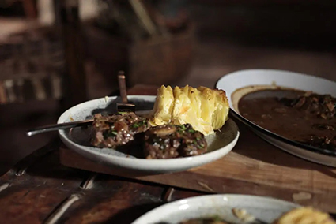

Plato principal-Bife madurado con papas paille

Si buscas una receta con carácter, sabor intenso y una presentación que impresione, este plato es para ti. El bife madurado, jugoso y lleno de matices, se combina a la perfección con unas crujientes papas paille, finamente cortadas y doradas al punto justo. Una preparación digna de los mejores restaurantes, pero hecha en tu propia cocina.
¡Vamos paso a paso a crear esta delicia!
Receta para cocinar un Bife madurado con papas paille en tu casa
Ingredientes
Bife angosto madurado 1 Kilo
Papas Daisy 1 Kilo
Grasa de cerdo Cantidad Necesaria
Sal y pimienta A Gusto
Arvejas 300 Gramos
Tomate en cubos 200 Gramos
Manteca clarificada Cantidad Necesaria
Pasos
Cortar bifes de 3cm de alto, condimentar con sal y pimienta.
Cocinar en parrilla por ambos lados hasta el punto deseado.
Cortar las papas con piel en finas láminas y después acomodarlas y cortarlas en fina juliana.
Freír en abundante grasa de cerdo hasta dorar.
Saltear en una sartén con manteca clarificada arvejas blanqueadas, tomate cubeteado. Condimentar con sal.
¡Y eso es todo! Tu bife madurado está en su punto justo, jugoso y lleno de sabor, acompañado por unas papas paille doradas y crujientes que aportan el toque perfecto. Un plato que combina técnica y tradición, ideal para sorprender a tus invitados… o simplemente para darte un gusto como te lo mereces. ¡Serví, disfrutá y que no quede ni una papa en el plato!
Link a la receta de El Gourmet